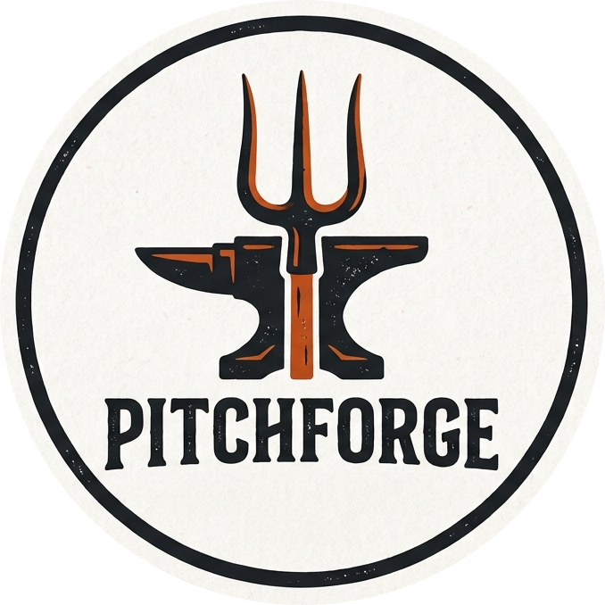

This page contains a release of Pitchforge along with some samples games as examples.
This is the adventure game about the haunted mansion. If you know what you are doing, it can be completed in 5 mins, and there are multiple for finishing it and slaying the vampire boss at the end. It is possible to complete it with all types of characters.
🚧 Note that the game is in a very early state; while the core story works, some locations have not been fully written and some cool features are also missing.
Please find the JavaScript source of the adventure module on github.
Images in the game are AI generated (via Gemini) and also watermarked.
A minimalistic/parody adventure based on this classic masterpiece. Whenever I start working in any game engine, I usually recreate The Orc and the Pie in engine first, as it is fun: this is the shortest possible adventure.
Please find the JavaScript source of the adventure module on github.
Hint: try killing the orc and eating the pie. 😊
All code for the engine's source is available on github. I have also added a game with the bare minimum components; you can run it here and you can find the adventure module here. If you want to experiment with creating something, your best bet is modifying/customizing the above two files.
Pitchforge uses static html pages with javascript; it not need any servers, all you need is open the html files in your browser.
The Pitchforge engine and all sample files are available under GNU GPL.
Documentation on the Poor Man's RPG system.
I plan to add some documentation on how the engine works; now the best way to figure it out is to study the above two samples.